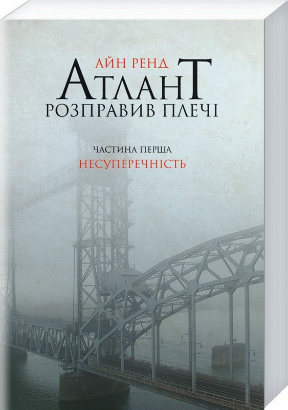
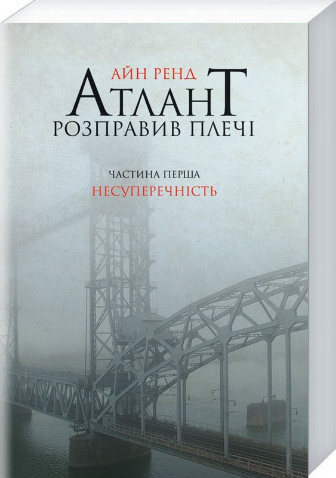

Про роман
Роман-антиутопія (1957) про боротьбу геніїв проти системи, де "Атланти" (творці) відмовляються підтримувати світ.
Фан-сайт культового роману Айн Ренд
Роман-антиутопія (1957) про боротьбу геніїв проти системи, де "Атланти" (творці) відмовляються підтримувати світ.
